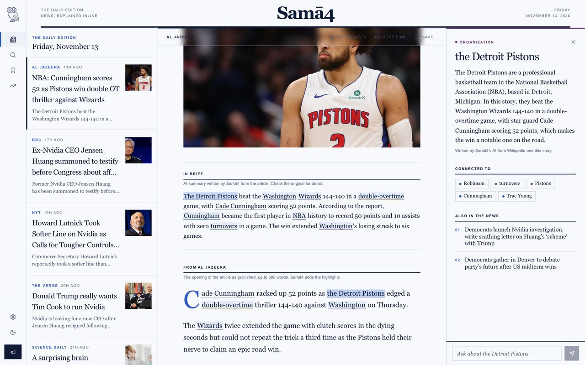
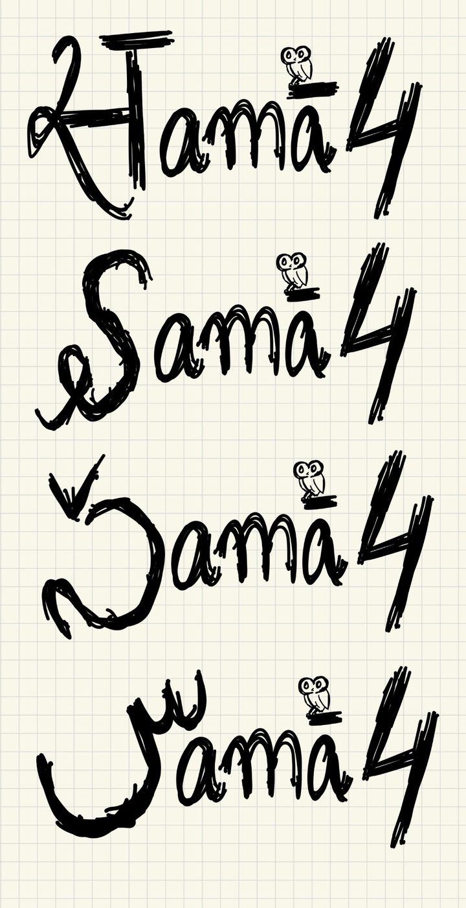

Sama4
A news reader that explains the people, places and ideas in a story, right beside the story.
10 outlets read every night
Problem
News assumes you already know the backstory: the people, court cases, acronyms and years of policy behind a single headline. Readers open five tabs or give up.
What I built
A reader that pulls stories from 10 outlets each night, finds the terms a general reader would stumble on with spaCy plus Claude, and explains each one in the context of that story, grounded in Wikipedia and the article. FastAPI on Railway, Next.js on Vercel, Postgres, Redis and Pinecone.
Result
Live at sama4.online. CI runs lint, type checks and tests, with backend tests against a real Postgres; every external service has a fake, so the suite runs offline.